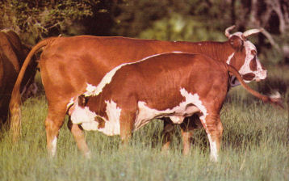
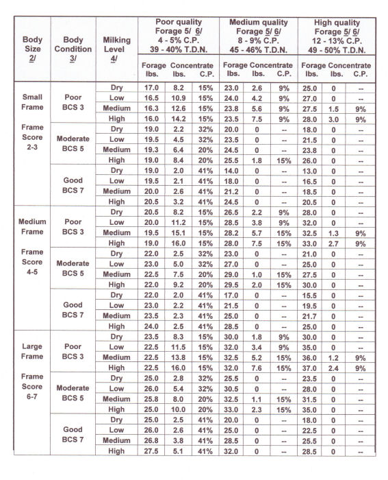

Texas Ranching Conservancy 
(Based on body size, body condition,  1/ All amounts of forage and concentrate are on as-fed basis, not on dry matter basis. Also, all cows need supplemental minerals, especially phosphorous, magnesium, salt, and trace minerals, and may need extra vitamin A on droughty or dormant forage. 2/ See supplementary text for discussion of cow body sizes. 3/ See supplementary text for discussion of assumptions about body condition. 4/ See supplementary text for discussion of milk production levels. 5/ See supplementary text for discussion concerning forage quality. 6/ Can also be used as a guide on standing forage. See supplementary text for explanation. 7/ See supplementary text for discussion of types of concentrate (9,15,20,32,41). * Hay consumption is reduced from maximum because of high concentrate feeding levels. ^ Amount shown will meet nutritional requirements. More could be fed to maintain body condition or decrease rate of loss of condition. |
|
Assumptions and Explanations The Rancher guide for supplementing mature range cows contains estimated feeding requirements with different quality forage (hay or pasture grass) for beef cows which vary in body size, body condition and stage or level of production. Body Size: Three body sizes are included:
These weights are at BCS 5 and are about 14-15% lower at BCS 3 and 16-17% heavier at BCS 7. Body Condition: Moderate flesh (BCS 5) is generally the minimum level of body condition required for consistent rebreeding. For dry cows in poor flesh (BCS 3), it is assumed here that an increase to moderate flesh (BCS 5) will be accomplished during the 3 to 4 months before calving. This requires a weight gain from 125 - 175 lbs., depending on body size. For lactating cows in poor flesh (BCS 3) at calving, it is assumed they will be raised to moderate flesh (BCS 5) in the 3 to 4 months after calving. Even with this increase in body condition by lactating cows, it is expected that their calving interval will be extended by at least three weeks. For cows of BCS 7, it is assumed that a decrease will be allowed to BCS 5, amounting to 150 to 225 lb. weight loss, depending on body size. This decrease would occur during the 3 to 4 month period before calving for dry cows. In practice, we might want to maintain some of the extra body condition of cows fleshier than BCS 5. This could better insure rebreeding and lessen effects of any subsequent periods of poor forage supply or quality. Milking Level: Low milk production is 9-10 lbs. for small cows, 11-12 lbs. of medium cows, and 13-14 lbs. for large cows. High milk is twice that for low milk. Forage or Hay Quality: Three qualities of forage are shown: Poor quality is 4-5% crude protein and 39-40% total digestible nutrients; Medium quality is 8-9% crude protein and 45-46 total digestible nutrients; High quality is 12-13% crude protein and 49-50 total digestible nutrients. The table also can be used for standing forage. Dormant warm-season pasture or range in winter is about like poor quality hay. In periods of drought-induced growing conditions, such as typical late summer, grass quality is probably somewhere between poor and medium quality hay. Concentrate: Five concentrate supplement types are listed. The "41" (41% C.P.) is straight cottonseed meal (or similar feeds). The "32" (32% C.P.) is high energy (at least 70% T.D.N), equivalent to a mix of 75% oilseed meal and 25% corn or other high energy grain. The "20" (20% C.P.) is high energy such as a typical all natural protein (or low urea) low-fiber breeder cube or a mix of 35% oilseed meal and 65% grain. The "15" (15% C.P.) is high energy such as a typical high quality creep feed or a mix of 20% oilseed meal and 80% grain. The "9" (9% C.P.) is straight corn or other low protein, high energy grain. These and other feeds are described on an accompanying table. Concentrates "32" and "15" are generally not as available as "20", typical 20% breeder cubes. Where "32" is recommended, substitution of a high quality 20% cube would provide required energy but will be low in protein, unless higher amounts are fed, about 1 lb. more for dry cows and 2 lbs. more for lactating cows. A 20% cube in place of "15" or "9" should satisfy energy requirements but at higher cost since protein, usually more expensive, would be wasted. It is important to note that protein content, used here to identify supplements, cannot be used alone for comparisons. Energy (T.D.N.) also must be considered. For instance, typical 30-32% liquid feed is not directly comparable to the "32" supplements listed (32% cubes or 75:25 mix) because of energy deficiency. In comparing alternative supplements, where"9" (straight grain) is recommended, the primary deficiency is energy. Where "41" (straight oilseed meal) is shown, the main storage is protein. Interpretations and Applications Body Size: Increases in body size do not change concentrate requirement as much as might be expected because forage intake is higher as size increases. But, if forage supply is limited, increased body size will require proportionately more concentrate feed. For these reasons, medium to large cows are more applicable where forage supply is generally adequate and more intensively produced. Small to medium cows fit best when forage supply is limited, especially under extensive conditions. Body Condition: Poor body condition (BCS 3) drastically increases concentrate requirements, which is difficult to accomplish biologically and is often not feasible economically. Moderate body condition (BCS 5) eliminates or significantly reduces concentrate requirements and may reduce forage required. Fleshy body condition (BCS 7) allows forage consumption to be reduced, if not, higher production or maintenance of stored body energy reserves. Forage Quality: Poor quality forage (hay or pasture grass) drastically increases concentrate requirements, which also reduces forage consumption. Average quality forage eliminates or significantly reduced concentrate requirements, and may reduce forage required. Excellent quality forage completely eliminates concentrate requirements, except for high milking, BCS 3 cows, and reduces forage required for BCS 5 or higher cows by as much as 4 lbs. compared to average quality forage. Supplemental Concentrate Types: Various situations call for everything from low protein, high energy feeds to those fed mostly for protein, and numerous combinations in between. Not surprisingly, some of the most readily available processed feed mixtures (especially 20% cubes) are necessary compromises to poor quality forage and poor to moderate body condition, by far the most common supplemental feeding scenario. Applicable concentrate types vary depending on body condition. Cows poor in body condition are relatively more deficient in energy than protein. Conversely, cows high in body condition generally need extra protein only, if anything, unless it is desired to maintain stored body energy reserves for possible subsequent periods of forage deficiency. Conclusions Simple cow feeding recommendations are hard to make. Forage quality and quantity, body size, body condition and milking level all affect beef cow supplemental requirements. Genetic body size and milking level should be matched to anticipated forage conditions. If this is done, adequate body condition is most easily maintained, resulting in optimum performance with minimum use of correctly formulated concentrate supplements. Mismatches of these factors penalize both animal performance and profit. _________________________________________ Prepared by Stephen P. Hammack, Professor and Extension Beef Cattle Specialist, Texas A&M University, Stephenville, Texas.
|
|
Back to TRC's management tools
http://www.texasranchingconservancy.com/feedguide.html |